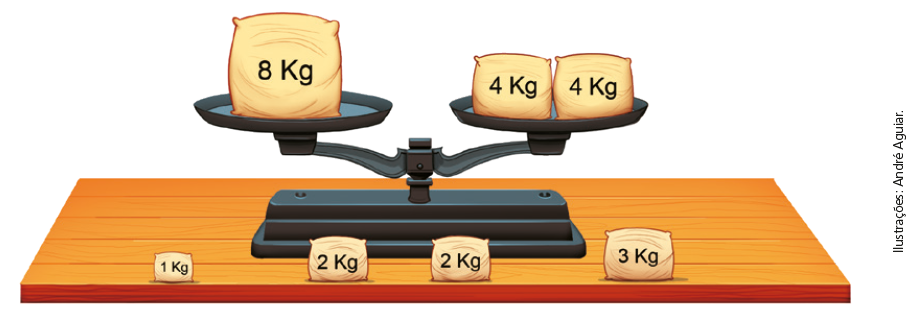

CAPÍTULO 3 - Igualdade
A balança a seguir está em equilíbrio. No prato da esquerda, temos um pacote com 8 kg de farinha, e no prato da direita, dois pacotes com 4 kg cada um.
1. Troque ideias com um colega e respondam no caderno às questões a seguir.

a) Se Gabriel colocar mais pacotes de farinha em cada prato, dos pacotes que estão sobre a mesa, quais devem ser colocados em cada prato para que a balança continue em equilíbrio?
b) A situação da balança pode ser representada por uma sentença matemática expressa por uma igualdade: 8 = 4 + 4. Escreva a nova sentença matemática que representa a situação após vocês acrescentarem mais pacotes de farinha nos pratos.
8 + 2 = 4 + 4 + 2
8 + 2 ⟶ 1.º membro
4 + 4 + 2 ⟶ 2.º membro
Ao adicionar um mesmo número aos dois membros de uma igualdade, encontramos uma nova igualdade.
A balança a seguir também está em equilíbrio.

UNIDADE 2 - CAPÍTULO 3
75
2. Troque ideias com um colega e respondam às questões no caderno.
a) Gabriel quer retirar alguns pacotes de farinha de cada prato, porém, a balança precisa permanecer equilibrada. Quais pacotes ele pode retirar de cada lado?
b) Escrevam a sentença matemática que representa a situação mostrada na imagem.
c) Agora, escrevam a nova sentença matemática após Gabriel diminuir os pacotes em cada prato da balança.
5 + 4 + 1 + 1 + 1 – 2 = 7 + 1 + 2 + 2 – 2
5 + 4 + 1 + 1 + 1 – 2 ⟶ 1.º membro
7 + 1 + 2 + 2 – 2 ⟶ 2.º membro
Ao subtrair um mesmo número aos dois membros de uma igualdade, encontramos uma nova igualdade.
Observe as balanças que estão em equilíbrio.


76
UNIDADE 2 - CAPÍTULO 3
3. Troque ideias com um colega e depois respondam às questões no caderno.
a) O que vocês observam de diferença entre as balanças A e B em rela-ção aos pesos que estão em cada prato?
b) Escrevam uma sentença matemática que represente a situação da balança A e da balança B.
c) Podemos dizer que a balança B pode ser representada pela sentença matemática (3 + 2) · 2 + = 5 · 2?
d) Podemos escrever a sentença matemática (3 + 3 + 2 + 2) : 2 = (5 + 5) : 2 para representar a situação da balança A?
Ao multiplicarmos ou dividirmos os dois membros de uma igualdade por um mesmo número, diferente de 0 (zero), encontramos uma nova igualdade.
ENCONTRE SOLUÇÕES
1. Copie as igualdades em seu caderno e coloque parênteses, quando for necessário, para torná-las verdadeiras.
a) 10 ∙ 4 + 36 : 2 = 200
b) 10 ∙ 4 + 36 : 2 = 58
c) 10 ∙ 4 + 36 : 2 = 38
d) 24 + 18 : 3 – 10 = 4
e) 24 + 18 : 3 – 10 = 20
2. Mariana quer colocar todos os sólidos geométricos nos dois pratos da balança, de modo que a balança continue em equilíbrio.

a) Usando todos os sólidos, quais deverão ser colocados em cada prato para que Mariana consiga deixar a balança em equilíbrio?
b) Escreva a sentença matemática que representa a situação após Mariana colocar os sólidos geométricos nos pratos.
3. Nas sentenças matemáticas a seguir, descubra o número representado por uma letra.
a) 131 – a = 98
b) c + 564 = 871
c) 24 + m + 7 = 56
d) 44 – 10 + p = 89
4. Descubra o número nas igualdades:
a) 246 ÷ ■ = 82
b) ■ · 5 = 110
c) ■ ÷ 8 = 81
d) 43 · ■ = 516
UNIDADE 2 - CAPÍTULO 3
77